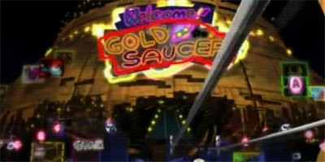

MIDGAR
Your journey starts here in the city of Midgar!
This is the capital city and power base of the Shinra Electric Power Company in the world of Gaia.
Midgar is the most technologically advanced city on the planet. Its large circular structure is supported
above the ground by eight mako reactors and a central pillar, with various other supports around the city.
On top of the structure lies the city proper, divided into eight sectors, while underneath it lie the slums
for the city's unfortunate and downtrodden. Midgar was once eight individual towns, but their names have
been forgotten in favor of referring to the different areas as sectors.
Thanks to its eight mako reactors, the city's massive power demands are met, but at a cost to the surrounding
countryside, which has become a barren wasteland due to the city sapping the surrounding life energy.
Due to this, the city and its reactors are a prime target for terrorism/rebel groups like Avalanche who seek
to restore the planet to its former state and stop Shinra from sapping its life energy.
CHOCOBO FARM
Right over to the East of Midgar is the Grasslands Area!
Here you'll find many wild monsters to fight but maybe riding a Chocobo will make it a bit easier.
The Grasslands begins where the extent of wasteland caused by Midgar's Mako extraction ends.
Set up in the otherwise empty plains of the Grasslands Area is the Chocobo Farm owned by Choco Bill, who has made business out of running an inn and selling
Chocobos and Chocobo Lure Materia to travelers trying to cross the marsh.
The Chocobo Farm is located in the
northeast area of the eastern continent. It is situated in the middle of grassland with an abundance of chocobos
roaming the land nearby. The farm itself is relatively small, with a single ranch, an outside pen, and a house for
the owner.
GOLD SAUCER
Tired of fighting? Then head on over to the Gold Saucer where anything is possible!
 The Gold Saucer is located in the midst of a desert to the southeast of the planet's western continent.
A towering amusement park built over the ruins of Old Corel, it is a world famous tourist attraction.
The Gold Saucer is notable for being home to a number of minigames, particularly at the Battle Square and
Chocobo Square. It is divided into seven attractions, which we'll leave it for you to explore and uses GP or Gold Points as its own currency,
which can only be won from its minigames.
The Gold Saucer's attractions are situated entirely on discs held up by the structure itself. The discs appear to reach high above ground level, as clouds
can be seen from the Saucer's exterior. Directly below it is Corel Prison, the remains of the old town of Corel.
The proximity of the Gold Saucer to Costa del Sol, located to its northeast, leads many tourists landing at Costa del Sol to go onto visit the Gold Saucer.